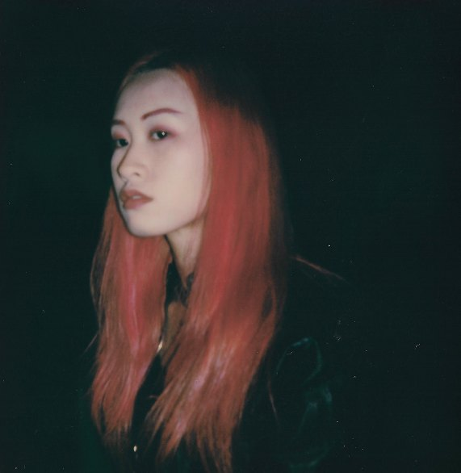

Films, music videos & AI shorts — directed by Junie Lau
Brand films, commercials & music videos
Art direction & production design
Fashion & portrait photography
我并不是末日乐观主义者，
但是我仍然想继续创造世界。
I am not a doomsday optimist, but I still want to keep creating worlds.

Junie Lau is a multidisciplinary creative based between London and Shanghai. As a director, she crafts futuristic visual narratives for leading global brands and celebrities across fashion films, music videos, and advertising.
Driven by a passion for innovation, she continually expands the boundaries of artistic expression through cutting-edge technology. By integrating AI into moving images, she has developed a post-digital cinematic language—avant-garde, ultra-modern, and deeply exploratory. Her works examine digital identity, humanities, and ontology, offering both emotional depth and critical reflection.
Her works have been exhibited at the Royal Academy of Arts and featured in British Vogue. Her music short The Court won the global championship at Stable Diffusion’s #DiffuseTogether contest, praised by six-time Grammy Award winner Peter Gabriel and international audiences. She also directed The Line Between Good and Evil, the theme MV for the Hong Kong movie I DID IT MY WAY (潜行).
Her AI short e^(iπ) + 1 = 0 won Silver at Runway’s International AI Film Festival, Best AI Application at France’s Artefact AI Festival, Best Film at the UK’s AIFA, and Best Hybrid Film at the AI Film Festival Amsterdam. It was invited to the 2024 Tribeca Film Festival and later toured major international festivals. That same year, she co-directed Our T2 Remake, the world’s first 90-minute independent AI feature, alongside 50 global filmmakers, which premiered in Hollywood.
Her AI short LOVE FROM VOID won Silver at Project Odyssey, the world’s largest AI film festival, and was officially selected for OpenAI’s Sora Select. Her Chanel collaboration BEFORE YOU LOVE ME, PLEASE LOVE YOURSELF FIRST won the Jury Award at Project Odyssey and was screened at Nvidia’s GTC Paris. As an official Google partner, she contributed to the development of Flow as AI Director. Her film Dear Stranger (浮生若梦) premiered on Google Flow TV at Google I/O. She was also invited as one of the first generative AI directors and IP partners at Promise Studio, expanding the future of AI filmmaking.
Recognized globally at the intersection of AI and artistic innovation—with collaborations with Google, OpenAI, Runway and Bytedance —she regularly speaks at major international AI summits. In both 2024 and 2025, she was a keynote speaker at the World Artificial Intelligence Conference (WAIC), China’s largest AI event. In 2025, she was invited as a visiting lecturer at Peking University and Tsinghua University, teaching AIGC and filmmaking, further cementing her influence and irreplaceable role in the global creative field.
As featured in
Follow Junie Lau